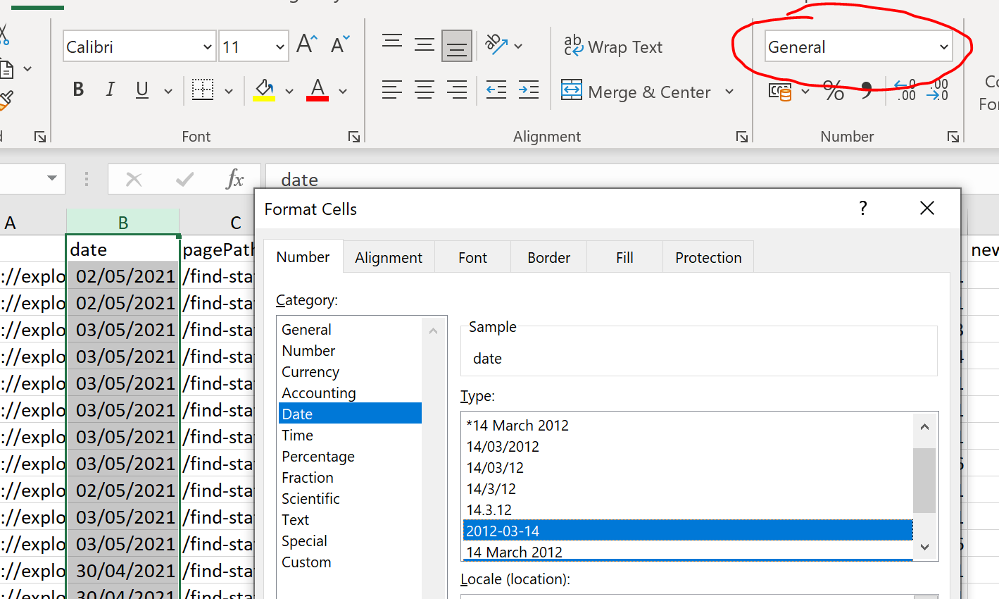

Open Data Standards
Guidance on how to structure data files
Introduction
The aim is to apply a consistent, logical, structure to all data files so that they are easier to use and analyse, minimising the time spent cleaning the data. Adopting these principles will give us more power to serve the needs of the users, saving both us and them time when producing and using the data, as well as opening up further opportunities for linking data.
Our publication data is released under the terms of the Open Government License and by following these standards will meet at least 3 stars for Open Data.
How to check against these standards
An interactive shiny app has been developed to automate checks against the standards as a final stage of automated quality assurance before upload to EES.
This can be run on any data file, though requires the EES metadata to be able to process the file. The app runs on our rsconnect servers, and is only available when using DfE kit. The app is mostly self-explanatory, though if you have any questions about it, or are curious to know more about how it works, the code is available on GitHub, and you can get in touch with us at statistics.development@education.gov.uk.
All data and EES metadata files must be run through the screening app before uploading to EES.
“Tidy datasets are all alike but every messy dataset is messy in its own way.” – Hadley Wickham
Overview of EES data files
For data to be used with the table tool and charts in EES, it needs to be provided to the following overall specifications:
- The data should be contained in a text file with comma separated values and with the extension .csv.
- The first row of the data file should contain machine readable column names in snake case.
- The data should be layed out in line with tidy data principles, consisting of filters (categories) and indicators (values).
- The file should contain the necessary mandatory columns (i.e. time_period, time_identifier, geographical_level, country_code and country_name);
- The data file should have an accompanying meta-data csv file, which contains information on the nature of the columns in the data file:
- whether a given column is a filter or indicator;
- human readable name for use in tables and charts on EES;
- filter grouping information;
- number of decimal places to display for indicator fields (i.e. allowing a lower precision to be presented in the dervied tables than the underlying data - useful for minimising rounding errors in aggregates);
- units for indicator fields (e.g. £, %);
- The data should use the appropriate GSS codes for suppressed, low, not available and not applicable entries.
An example pair of data and meta-data files are illustrated in the files and tables below.
Example data file (ees_demo_datafile.csv)
Note that the mandatory columns time_identifier, geographic_level and country_code are abridged in the table below to help with displaying in a web page, but are shown in the example file at the link above.
| time_period | … | country_name | region_code | region_name | gender | school_phase | number_children | percent_children |
|---|---|---|---|---|---|---|---|---|
| 202021 | … | England | Total | Total | 1000 | 100.000 | ||
| 202021 | … | England | Male | Total | 490 | 49.000 | ||
| 202021 | … | England | Female | Total | 510 | 51.000 | ||
| 202021 | … | England | Total | Primary | 250 | 100.000 | ||
| 202021 | … | England | Male | Primary | 131 | 52.400 | ||
| 202021 | … | England | Female | Primary | 119 | 47.600 | ||
| 202021 | … | England | E12000001 | North East | Total | Total | 100 | 100.000 |
| 202021 | … | England | E12000001 | North East | Male | Total | 32 | 32.000 |
| 202021 | … | England | E12000001 | North East | Female | Total | 64 | 64.000 |
| 202021 | … | England | E12000001 | North East | Total | Primary | 43 | 100.000 |
| 202021 | … | England | E12000001 | North East | Male | Primary | 12 | 27.907 |
| 202021 | … | England | E12000001 | North East | Female | Primary | 31 | 72.093 |
| 201920 | … | England | Total | Total | 956 | 100.000 | ||
| 201920 | … | England | Male | Total | 444 | 46.444 | ||
| 201920 | … | England | Female | Total | 512 | 53.556 |
Example meta-data file (ees_demo_datafile.meta.csv)
| col_name | col_type | label | indicator_grouping | indicator_unit | indicator_dp | filter_hint | filter_grouping_column |
|---|---|---|---|---|---|---|---|
| gender | Filter | Gender | Filter by pupil gender | ||||
| school_phase | Filter | School phase | Filter by the phase of the school | ||||
| number_children | Indicator | Number of children | |||||
| percent_children | Indicator | Percentage of children | % | 1 |
Note that for the percent_children column, the underlying data is provided to 3 d.p., but the meta data constrains it to 1 d.p. This means that figures in tables in the publication will be presented to 1 d.p., but users will have access to the higher accuracy in the underlying data. As well as allowing EES to meet different users’ needs, this also helps lower the risk of rounding errors in the underlying data creating unwanted behaviour in charts in EES.
Further information on all of the requirements for appropriately prepared data files follow in the sections below.
Once you have prepared a draft data file, you should always run the file through our EES data file screener. This will check for common issues that may prevent the file from being used appropriately by EES. Note that some issues may not prevent your file from uploading to EES, but would still cause undesired behaviour once on the platform, so it is imperative to screen data files before uploading.
General requirements
When publishing statistics, you should be following these standards for underlying data files.
For publishing on EES specifically, please note the following points:
- Data files uploaded to Explore Education Statistics will be downloadable, everything in your file must be publishable.
- You must remember to apply all of your usual suppression policies.
- The data files run the table and chart tools, so all data that you wish to create a table or chart with must be included.
- We expect that multiple data files may be provided for each release.
- Keep in mind that a data block can only have a single data source. However, many blocks can share one source.
- You should include all years of the data you available in your data file to facilitate time series analysis.
- Each data file must be accompanied by a corresponding .csv metadata file as outlined under EES Metadata.
In light of recent accessibility legislation, you should aim to include at least 3 years of data in EES where it exists.
Tidy data structure
The move to the new platform provided the ideal opportunity to standardise and ‘tidy’ up our data to give users the consistency that they ask for. Our standards draw upon the ideas of tidy data - this means applying a logical structure to datasets so they are easier to use and analyse, minimising the time spent cleaning the data before use.
Here is a quick summary video of what exactly tidy data is.
Further details on tidy data, can be found by reading Hadley Wickham’s academic paper on Tidy Data. The key principles to remember are:
- Each variable forms a separate column.
- Each observation forms a separate row.
The variables (columns) in each of the uploaded data files will fall in to the following two categories: filters and indicators.
Introduction to indicators
Indicators are the measureables in any data set. They should be grouped based on the type of measurement, with a column for each different type of measurement. For example, Number of pupils and Percentage of pupils would be two disticnt indicator columns in a data file.
More details on indicators in the EES context are provided in the Indicators section below.
Introduction to filters
A single filter column should contain all the possible filter values for a single data-sub-aggregation. For example, many publications would have an ethnicity_major column containing all the major ethnic breakdowns contained in the data or an fsm column containing the entries FSM and non-FSM.
Filters come in two types: standard filters and additional filters.
The standard filters encompass time and geography elements (e.g. time_period, geographic_level, la_code). Specific combinations of these standard filters must be present in your data files and the contents of these filters are required to meet specific standards in order for a data file to be compatible with the table tool in EES.
Additional filters are the release specific characteristics that we filter our data on, e.g. school types, learner characteristics, grade thresholds, etc. Some of these filters have recommended column names and entries in order to support consistency in data files across publications. For example ethnicities should have column names of ethnicity_major, ethnicity_minor or minority_ethnic and contents should be limited to the GSS standards. Such guidelines are outlined in the Common harmonised variables section of this page, whilst further information on fiters in the EES context is given in the Filters section below.
Optimising filter-indicator combinations
The policy of creating tidy data files effectively means optimising your filter-indicator combinations for use within the EES user interface. By doing so, end users will be better able to interact with your data and find the information that they’re looking for.
The number of indicators should be kept to a minimum, whilst maintaining different types of measurements as distinct indicators. For example a wide structure might consist of something like the following:
| … | number_pupils_passing_95 | number_pupils_passing_94 | percentage_pupils_passing_95 | percentage_pupils_passing_94 |
|---|---|---|---|---|
| … | 567 | 642 | 45.7 | 51.8 |
Creating a tidy form of this data would look something more like this:
| … | grade_range | number_pupils | percentage_pupils |
|---|---|---|---|
| … | 9 to 5 | 567 | 45.7 |
| … | 9 to 4 | 642 | 51.8 |
This is a simplified example and your data will likely be more complex, but in making this type of change, you may be able to better identify more optimal ways of organising your data. For example, if you find that restructuring like this creates a lot of empty cells, it may be that the data has incompatible filters and can be separated out into multiple data files.
Data format
These standards give you the power to format the data in a way that best meets the needs of the users. There are only a handful of formatting standards to follow to ensure best practice and consistency across all of our data.
Data files must in comma separated values (.csv) format, and use UTF-8 encoding. You can specify this when saving the file in Excel, or exporting from elsewhere.
If you need to use commas within a cell, then you must add a text delimiter such as quotes to your file to define each cell - this is often done automatically for you, though if you’re unsure then you can open up your csv file in a text editor such as notepad to check.
You should also ensure that your data follows the GSS Standards on symbols, though be aware to ignore the ask that symbols are included in separate cells from the data, which is unpractical and unrealistic.
File names
File names should only include numbers, letters, underscores or hyphens. Special characters must be avoided; for example, the following characters \ / : * ? " < > | [ ] & $ , . + are all considered special characters and are used for specific tasks in an electronic environment, which can lead to confusion in some systems. The use of non-English language letters such as á, í, ñ, è, and õ, should also be avoided.
File name should ideally be no more than 35-50 characters, file names that try to give too much information end up having the reverse affect and users skim over and get less value than from a more concise name. File names that extend beyond 200 characters will likely cause issues for users using the files in other programs.
The metadata file should have exactly the same name as the data file, with a suffix of ‘.meta’. E.g. mydatafile.csv and mydatafile.meta.csv.
You should avoid references to time periods in the file name as this information is shown elsewhere and this can make it harder for users to make use of the newer versions of files in future years. File names should be recyclable year on year.
In general you should avoid including the geographic level in the file name, unless it is a file that is specifically different (e.g. a file for school level data only).
For use with EES all file names should be in lower case and avoid special characters or spaces. Any upper case characters in file names will be forced to lower case by EES, and will appear as lower case to the users.
Variable names
Variable names must be in the first row of your file as the header row, must not include spaces, and ideally be formatted in snake_case for ease of use.
Avoid starting variable names with a numeric character.
As with file names, you should avoid any special characters; for example, the following characters \ / : * ? " < > | [ ] & $ , . + are all considered special characters and are used for specific tasks in an electronic environment, which can lead to confusion in some systems. The use of non-English language letters such as á, í, ñ, è, and õ, should also be avoided.
Variable names should ideally be kept below 25-35 characters as long names are often cut off when viewing the data file and generally fail to get the information required across to users. It is a balance between giving enough information so it’s clear what it refers to and giving so much that it’s unhelpful. Remember to make use of your public data guidance and methodology for expanding on details.
How to export data with UTF-8 encoding
Most of the time our data is exported as a .csv file it will have UTF-8 encoding by default. However, there are times when this isn’t the case, and therefore we’ll quickly run through how to check this below in each of Excel, SQL, and R.
Excel
Excel tends to save all .csv files as UTF-8, however this is not always the case, particularly if there are symbols in the file (such as £). To ensure that it saves with UTF-8 encoding you can select the following when saving a file:
File > Save As > CSV UTF-8 (Comma delimited) (*.csv)
SQL
For saving results out of SQL as a .csv file there isn’t an option to specify the encoding, therefore the best bet is to either open the file in Excel and specify that as above, or to run your SQL query/read your data into R and follow the guidance below.
R
When writing .csv files out of R, you’ll mostly likely be using either write.csv() from base R, or write_csv() from the readr package. For the first one, you can specify encoding using encoding = like the following example:
write.csv(my_data, file = "my_data_file.csv", encoding = "UTF-8")
For write_csv(), which some of you may be using for increased processing speed, the function automatically encodes as UTF-8 format, meaning that you don’t have to do anything different!
How much data to publish
You should publish as many years of data that you have and is practicable.
If you are not providing a full timeseries for any reason, you must link to the older published data from your publication release page, and make sure that it’s omission is explained in your methodology and metadata documents.
Deciding what should be in a file
Explore Education Statistics is designed to give production teams the freedom of controlling what data users can access, and how they access it. It is expected that most releases on the platform will have multiple data files, and teams have control over how they break these files up.
The first key consideration is that the table tool will only create tables from a single a data file, and cannot use multiple files as sources. Therefore any data that you want to compare within a single table must in the same data file. The table tool itself is there to allow users to narrow down the amount of data they have to absorb and to be able to efficiently take away key statistics.
A useful way to judge how to break up data files is to consider whether all of the data in the file is appropriate to show side-by-side in the same table. If there are data that are conceptually different or may be confusing to compare side by side, then these should be in separate data files. Any data file uploaded to EES is usable by all users in the table tool, and users will be able to download the exact same files as you upload.
We generally recommend fewer large files over a larger number of smaller files. If you think you are having issues with file size please tell us so that we can investigate and work towards a solution with you.
File size
There are no character or size limits in a csv file and there is no size limit for EES, though the larger a file is, the longer it will take to upload and process. Also remember that the files you upload are the files that users will download, consider the software they may access to (e.g. Excel) and whether the size of your files are compatible with this.
Excel has a cell character limit of 32,760 and a row limit of 1,048,576. It is best to avoid exceeding these as some end users may struggle to open the file. One good way to cut the file down is to split after a certain number of years, or to separate out different geographic levels into separate files, providing school level data as a separate file for example. With the data all being in a tidy format these are then easy enough for secondary analysts to stitch back together if needed.
A rough guide to file size would be:
- Anything under 10mb is relatively small
- 10mb to 100mb is a fairly common file size that most teams have
- 100mb to 500mb is a large file and will struggle to upload if not compressed to a zip folder.
- 500mb and over are very large, and sometimes may struggle to compress small enough to upload.
- 1gb or more in size is larger than any we have seen before and will likely need testing in the platform first.
Contact us if you have any issues, or files that might be over 1gb.
Data symbols
In line with the GSS guidance on symbols, special values should be replaced with symbols in the following situations:
| Symbol | Usage | Example | Obsolete equivalents |
|---|---|---|---|
| z | When an observation is not applicable | No data for at gender level for boys at an all-girls school | |
| x | When data is unavailable for other reasons | Data for an indicator is not collected in a certain region | : |
| c | Confidential data | Data has been suppressed | |
| low | Rounds to 0, but is not 0 | Rounding to the nearest thousand, 499 would otherwise show as 0. Only use 0 for true 0’s | ~ |
| u | When an observation is of low reliability | Data for a local authority is identified as missing returns so is removed from regional and national totals |
If you have any other conventions you’ve used in previous publications, or a scenario that isn’t covered above, check the GSS guidance (ignoring the part around separate columns for symbols), and contact us.
EES metadata
Metadata in a machine readable (.csv) format must accompany datasets uploaded to the Explore Education Statistics platform to ensure that the files can be processed correctly. This data will not be seen by users and is purely for EES to be able to understand and read your data.
This EES metadata is different to any metadata files you may provide alongside your data for your users.
We only need to provide EES metadata for filters and indicators, we do not need to provide any EES metadata for the compulsory observational units (time and geography), as this has been standardised and the platform is expecting pre-defined columns and values in those fields.
We do not need to provide metadata for filters that only have a single level, as this data is not useful for EES, and is there for the benefit of end users downloading the files.
Note that any extra geography columns not specified in the allowable values above, or any time columns extra to time_period and time_identifier, are filters, and should be included in EES metadata if they have two or more levels.
With some files there may be more than one way to specify the metadata that will work in EES and give an accurate representation of the data itself. In these cases we recommend that publication teams test out different approaches and decide their approach based on what will best meet the needs of the users of their data.
Mandatory EES metadata columns
| column | details |
|---|---|
| col_name | This must exactly match the name of the corresponding column in the dataset. |
| col_type | This must be either ‘Filter’ or ‘Indicator’. |
| label | This is the version of the column name that the users will see on the platform, therefore you must fill this in and not leave it blank. For example, pupil_headcount may be ‘Number of pupil enrolments’. You should aim to keep these short and descriptive, but have the freedom to decide what is best to do for your users. |
| indicator_grouping | This column gives production teams the option to add subheadings to group indicators in order to benefit the user. If this column is left blank, all indicators will be presented as one list of individual square radio boxes with no subheadings. |
| indicator_unit | If this column is left blank then this will be a number by default, alternatively you can use either of the following units for financial or percentage measures - “£”, “£m”, “%”, “pp”. |
| indicator_dp | This column allows you to set decimal place formatting for each of your indicators. If you leave it blank the platform will default to 2 d.p |
| filter_hint | This column gives you the option to add in a hint such as ‘Filter by school type’ for the filter to make the service easier for the users to navigate. If you leave the column blank, no hint will appear. Do not duplicate the column name here, as it will just appear twice |
| filter_grouping_column | This column should be blank unless you are wanting to group your filters. When you are wanting to group your filters this column should contain the exact name of the column/variable that you wish to group by. It is good practice to use the same variable name as that you are grouping, with _group appended at the end, i.e. ‘filter’ and ‘filter_group’ |
Note that if you are using percentage points (pp) you must include a clear explanation in your release and methodology, so that users can understand what you are referring to.
Example EES metadata
| col_name | col_type | label | indicator_grouping | indicator_unit | indicator_dp | filter_hint | filter_grouping_column |
|---|---|---|---|---|---|---|---|
| gender | Filter | Gender | Filter by pupil gender | ||||
| school_phase | Filter | School phase | Filter by the phase of the school | ||||
| number_children | Indicator | Number of children | |||||
| percent_children | Indicator | Percentage of children | % | 1 |
| time_period | … | country_name | gender | school_phase | number_children | percent_children |
|---|---|---|---|---|---|---|
| 2018 | … | England | Male | Primary | 240 | 26.7 |
| 2018 | … | England | Female | Primary | 200 | 22.2 |
| 2018 | … | England | Total | Primary | 440 | 48.9 |
| 2018 | … | England | Male | Secondary | 240 | 26.7 |
| 2018 | … | England | Female | Secondary | 220 | 24.4 |
| 2018 | … | England | Total | Secondary | 460 | 51.1 |
| 2018 | … | England | Male | Total | 480 | 53.3 |
| 2018 | … | England | Female | Total | 420 | 46.7 |
| 2018 | … | England | Total | Total | 900 | 100.0 |
Time and geography
Every observation, or row, in all of the provided data files will have a set of observational units based on the time period and geographic level that the data relates to. The number of these columns will differ across files depending on the number of geographic levels included in the publication.
Across every single dataset of official statistics produced by DfE, the following column names must be present at a minimum (example cell values):
| time_period | time_identifier | geographic_level | country_code | country_name |
|---|---|---|---|---|
| 201819 | Academic year | National | E92000001 | England |
Time columns
We use the two columns, time_period and time_identifier, to generalise time across our underlying datasets. All data files must contain these. This is a important for general useability of our data, as well as being critical in driving the charts and tables in the Explore Education Statistics platform and making explicit reference to the time in which our measurements relate to. This is a compulsory element of any official statistics dataset.
If you think that your data can’t follow this format, please contact statistics.development@education.gov.uk with details so that we can discuss this.
- time_period must contain either a four digit year, or a 6 digit year.
- time_period must be numeric. This allows the platform to understand ranges and order periods in a logical manner.
- six digit time_periods must represent consecutive years - e.g. 201718, not 201619.
- If you’re referring to a single term you should use the academic year not the calendar year in the time_period column.
- Conceptually different years cannot be mixed in the same dataset.
- Conceptually different year breakdowns (e.g. term, quarter, month), can be mixed with a full year of the same type using a filter column.
Specific time standards
Producers should not mix different types of years in the same dataset. This is to prevent any chance of confusion for users selecting time periods with similar labels in the table tool. For example, you cannot have Academic year and Calendar year data in the same data file. You also cannot mix yearly breakdowns (e.g. full year, quarters, months, or terms) in the time identifier column. Instead, where it makes sense to mix these within a data file you should use a filter column as shown below. Note the use of ‘Total’, this is a part of the standards for filters.
| time_period | time_identifier | quarter |
|---|---|---|
| 201718 | Academic year | Total |
| 201718 | Academic year | Q1 |
| 201718 | Academic year | Q1-2 |
| time_period | time_identifier | month |
|---|---|---|
| 2017 | Calendar year | Total |
| 2017 | Calendar year | July |
If your row of data spans multiple years (e.g. is a cumulative sum between 2010 and 2018), the starting year should be made clear in the name of the indicator, with the year of the end of the time period listed as the time identifier. For example if you had been recording the number of enrolments in a Local authority since from the start of the 2010/11 Academic year to the end of the 2017/18 Academic year, your data would look like the example on the right.
| time_period | time_identifier | starts_since_201011 |
|---|---|---|
| 201718 | Academic year | 190 |
| 201617 | Academic year | 173 |
List of allowable time values
All time_period values should be numeric only, below the number of digits (either 4 or 6) is defined per time_identifier below. Do not include dashes or slashes in six digit years.
You can only mix time_identifiers if they appear within the same table below. If they are in separate tables then they should not be mixed.
| Acceptable time_identifier value | Corresponding time_period |
|---|---|
| Calendar year | 4 digits |
| Acceptable time_identifier value | Corresponding time_period |
|---|---|
| Reporting year | 4 digits |
| Acceptable time_identifier value | Corresponding time_period |
|---|---|
| Academic year | 6 digits |
| acceptable time_identifier value | Corresponding time_period |
|---|---|
| Financial year | 6 digits |
| Acceptable time_identifier value | Corresponding time_period |
|---|---|
| Financial year Q1 | 6 digits |
| Financial year Q2 | 6 digits |
| Financial year Q3 | 6 digits |
| Financial year Q4 | 6 digits |
| Acceptable time_identifier value | Corresponding time_period |
|---|---|
| Part 1 (April to September) | 6 digits |
| Part 2 (October to March) | 6 digits |
| Acceptable time_identifier value | Corresponding time_period |
|---|---|
| Tax year | 6 digits |
| Acceptable time_identifier value | Corresponding time_period |
|---|---|
| Autumn term | 6 digits |
| Spring term | 6 digits |
| Summer term | 6 digits |
| Acceptable time_identifier value | Corresponding time_period |
|---|---|
| Autumn and spring term | 6 digits |
| Acceptable time_identifier value | Corresponding time_period |
|---|---|
| January | 4 digits |
| February | 4 digits |
| March | 4 digits |
| April | 4 digits |
| May | 4 digits |
| June | 4 digits |
| July | 4 digits |
| August | 4 digits |
| September | 4 digits |
| October | 4 digits |
| November | 4 digits |
| December | 4 digits |
| Acceptable time_identifier value | Corresponding time_period |
|---|---|
| Week 1 | 4 digits |
| Week … | 4 digits |
| Week 52 | 4 digits |
Remember
- You must include time_period and time_identifier columns in your data files.
- Your data must match the allowable values above.
- Use ‘Reporting year’ if your data does not fit in other categories, i.e. collected on a specific day.
- If you have different types of year such academic, calendar, and financial, these should be in separate files.
- Use filters to add more detail if you have multiple time breakdowns in the same file (quarter/full year).
- Where a measure spans multiple years, you should name the starting year, and set the time_period as the year published.
Geography columns
We publish at a number of different geography breakdowns and these vary from publication to publication. Every publication in the new platform must include the three compulsory geography columns - geographic_level, country_code and country_name in its data files. These are compulsory as the data we are producing must lie within a country boundary.
The geographic_level column should describe the level of data present in that row. Therefore data for a collection from a specific local authority would have ‘Local authority’ as the geographic_level, while a National aggregation would have ‘National’ as the geographic_level.
Teams should make sure that they are regularly checking their geography codes if they are not using a lookup from a maintained database (such as in the PDR). ONS have the Open Geography portal, which can be a useful way of checking these. There is a wealth of data on there, though Local authority boundaries can be hard to find, they can be found using the tabs at the top – Boundaries > Administrative Boundaries > Counties and Unitary Authorities.
If you have data from an unknown location, the standard is to use ‘Not available’ as name, and ‘x’ as the code/s, this clearly marks that the geographical data for that row is unavailable, and does so in a consistent way with the wider GSS. If you have a unique variation of a certain location, e.g. ‘Outside of England and unknown’, we may be able to add these in as exceptions. Locations like this would have a code of ‘z’ as no widely used code is applicable, please get in touch with us to discuss it further if you think this might apply to you.
We expect that all geography codes will be based on the Open Geography Portal and run checks against this for various levels in the data screener, please contact us if you have data that doesn’t match this.
Where you have data for a legacy LA that does not have a 9-digit new code, leave those cells as blank instead.
Different measures of geography
When using geographies that can be measured in multiple ways, you can achieve this by including a filter such as level_methodology in the example below to state how you have measured the geographic level. For example, at Local authority level you may have data that was measured by the residence of the pupil and the location of the school:
| geographic_level | old_la_code | la_name | new_la_code | level_methodology | headcount |
|---|---|---|---|---|---|
| Local authority | 373 | Sheffield | E08000019 | Pupil residence | 689 |
| Local authority | 373 | Sheffield | E08000019 | School location | 567 |
Allowable geographic levels
All rows must have country_code and country_name completed, regardless of geographic level. The additional required columns by level are shown below. You do not have to publish at every level, this is a guide that covers every level that can be published in the platform.
Where you have multiple geographic levels in a file, leave any not applicable columns blank for other rows. For example, region_name and region_code should be blank for national rows. Some levels do fit into a hierarchy, for example local authorities all have a region, in these cases you should include the higher level information too. So for a local authority row, the region and country columns would all be completed as well as the la columns.
| geographic_level | required columns | notes |
|---|---|---|
| National | No additional columns | |
| Regional | region_code, region_name | |
| Local authority | old_la_code, new_la_code, la_name | It is usually good practice to include the Regional aggregations where possible given the direct link between Local authorities and Regions. |
| RSC region | rsc_region_lead_name | For RSC region data, we generally define them into lead RSC regions where the majority of the data is from. |
| Parliamentary constituency | pcon_code, pcon_name | |
| Local authority district | lad_code, lad_name | |
| Local enterprise partnership | local_enterprise_partnership_code, local_enterprise_partnership_name | |
| English devolved area | english_devolved_area_code, english_devolved_area_name | |
| Opportunity area | opportunity_area_code, opportunity_area_name | |
| Ward | ward_code, ward_name | |
| MAT | trust_id, trust_name | Note that Trust ID is shown as Group ID on GIAS when looking at a Trust. MATs also have a ‘company number’, this can be included but is not mandatory. |
| Sponsor | sponsor_id, sponsor_name | Note that Sponsor ID is shown as Group ID on GIAS when looking at a Sponsor. |
English devolved area is used to refer to combined authorities, mayoral combined authorities and the Greater London Authority.
Planning area, School, Provider, and Institution level data will upload as normal to EES, though will not be read into the table tool or data blocks if they are mixed in with other levels. All data, including these levels are accessible in the downloadable files for users to explore in the same format as they are uploaded.
For Provider, any data files that only consist of this level are able to be uploaded and will be usable in the table tool. This solution is still not ideal, though it will allow you to include additional filters at provider level. Wherever there are multiple values per provider this should be marked as a filter, and where there is a single value per provider this should be marked as an indicator.
For School, any files consisting of school-level data should be standalone data files (that will work in the table tool, not ancillary files) and these should all be passing the EES data screener. They should also include LA level information so that users can see this when searching.
| geographic_level | required columns | notes |
|---|---|---|
| School | school_name, school_urn, school_laestab, old_la_code, new_la_code, la_name | |
| Provider | provider_name, provider_ukprn |
For Planning area and Institution data, any data files that only consist of these levels should be uploaded as an ancillary file rather than a data file.
| geographic_level | required columns | notes |
|---|---|---|
| Planning area | No required columns, though we recommend both planning_area_code and planning_area_name | |
| Institution | No required columns, though we recommend you include institution_id and institution_name to make data matching easier |
If you have a level that isn’t covered above, please contact statistics.development@education.gov.uk with details and example data.
Using School or Provider as a filter
Provider / School breakdowns can work as a filter column in your data file but only if it is the only filter in the file. We’d recommend using school_name or provider_name as the filter, and then including the code as well, such as Malton School (URN: 121681) or Malton School (UKPRN: 10004165). You should also include LA level information so that users can see this when searching.
This approach will work for basic filtering of providers and schools but it may not be performant in the table tool and the number of choices made available to users may be overwhelming (especially for schools, or data set to national level).
Unknown geographic codes
| Geographical code | Usage | Example |
|---|---|---|
| z | When a geography code is not applicable | Using custom geographies like “Scotland, Wales and Northern Ireland” as a group. This has no standardised geography code so will not be applicable |
| x | When a geography code is unavailable | Data is missing, the geography is unknown so no code is available |
Remember
- You must have the minimum expected geography columns, country_code and country_name.
- You must also have the additional columns required for all geographies included in your file.
- The additional columns must exactly match the names above.
- You do not have to publish at every level in the guide, publish the selection of levels you feel appropriate.
- You should regularly check that you are using the most up to date geography names and codes.
- Aside from blanks, no two geographic locations should have the same code.
- You can mix geographies in the same file, and should avoid separating files by geography unless size is an issue.
Common harmonised variables
Wherever possible variables should confirm to the DfE harmonisation strategy. Having consistent variables across publications allows users to more quickly navigate and understand our statistics, whilst also facilitating more advanced methods of interacting with our data platform such as automated data retrieval for dashboards and other secondary statistics services.
Ethnicity
Overview
Race is a protected characteristic under the Equality Act 2010 and can include colour, nationality, ethnic or national origins. Data collected on ethnicity is self-identified and captures a person’s feelings of cultural heritage and belonging. Everyone may have slightly different ideas and feelings about what ethnicity encompasses, race and nationality may, or may not, be a part of a persons’ self-identified ethnicity.
This guidance has been written by collating the most up to date advice and guidance from the following sources:
- Government Statistical Service (GSS)
- Office for National Statistics
- Cabinet Office
- Commission on Race and Ethnic Disparities (CRED) report
GSS ethnicity categories
Ethnicity breakdowns should be presented within the standard field names in any data files containing ethnicity breakdowns: ethnicity_major, ethnicity_minor or ethnicity_detailed. The first two are outlined in reference to the GSS guidelines on ethnic groupings below, whilst the third is for any ethnicity fields containing finer grained breakdowns than described in ethnicity_minor below.
The GSS publish standards on how to collect ethnicity data based on research conducted for the UK Census. The current guidelines (shown below) were developed as part of the 2011 Census and were unchanged in the 2021 census. We aim to follow as closely as reasonable to the GSS standards and guidance.
| ethnicity_major | ethnicity_minor |
|---|---|
| White | English/Welsh/Scottish/Northern Irish/British |
| Irish | |
| Gypsy or Irish Traveller | |
| Any other White background | |
| Mixed/Multiple ethnic groups | White and Black Caribbean |
| White and Black African | |
| White and Asian | |
| Any other Mixed/Multiple ethnic background | |
| Asian/Asian British | Indian |
| Pakistani | |
| Bangladeshi | |
| Chinese | |
| Any other Asian background | |
| Black/African/Caribbean/Black British | African |
| Caribbean | |
| Any other Black/African/Caribbean background | |
| Other ethnic group | Arab |
| Any other ethnic group | |
| Unknown | Unknown |
Note that these standards are written from the perspective of creating survey questions, i.e. the data collection phase. Where teams are trying to aggregate existing categories up to match the GSS guidance, careful consideration of how and where differing systems may or may not match with the guidance is necessary.
We recommend two alternative methods of ordering the above ethnic groups when reporting on ethnicity statistics:
- Alphabetical: use in tables and when listing ethnic groups (with ‘Other ethnic group’ and sometimes ‘Unknown’ as a final category)
- In expected order of size (with largest first): useful in charts and visualisations as it makes data and patterns easier to read
Reporting on broad ethnic minorities catageories (e.g. BAME)
Published in March 2021, the report of the Commission on Race and Ethnic Disparities made a number of suggestions on how we discuss and report on race in the UK.
One of the major elements was around aggregation of ethnic minorities into a single over-arching group (in particular BAME):
Recommendation 24: Disaggregate the term ‘BAME’ Stop using aggregated and unhelpful terms such as ‘BAME’, to better focus on understanding disparities and outcomes for specific ethnic groups.
The reasons for this approach are two-fold:
Grouping separate ethnic minorities into a single over-arching group can mask differing trends that may be present in the underlying data for groups experiencing different pressures and environments within UK society.
The phrasing ‘Black and Minority Ethnic’ and ‘Black, Asian and Minority Ethnic’ give an emphasis to specific ethnic groups whilst excluding others. This could be misleading or diminish consideration of the unnamed groups within the statistics.
Based on this guidance, the following is how teams should aggregate and write about ethnic minority groups.
Statistics producers should avoid where possible the practice of reporting aggregates grouping together disparate ethnic groups. Instead, statistics should be reported individually for the recommended top-level groups:
White
Mixed/Multiple ethnic groups
Asian/Asian British
Black/African/Caribbean/Black British
Other ethnic group
Where there is a reasonable need to publish or report statistics for a full aggregation of ethnic minorities (such as reporting on existing historical targets), official guidance is as follows:
Use ‘ethnic minorities’ to refer to all ethnic groups except the white British group. This term includes white minorities, such as Gypsy, Roma and Irish Traveller groups. For comparisons with the white group as a whole, use ‘ethnic minorities (excluding White minorities)’.
Filters
A filter is a variable that we break our data down by, such as school type, pupil characteristics, or NQT status. There are no required standards for these, you can include any filters that you feel benefit the users of your data.
Filter names must not include spaces, and ideally be formatted in snake_case for ease of use. You can use abbreviations to keep the names short and usable, your users will be able to see what each variable name means in the data guidance. Avoid starting variable names with a numeric character.
Aggregates should be included for all filters where possible. There will be some situations where aggregation does not work, this will not break the platform, though may make the data less user-friendly. In general, if you can’t aggregate, e.g. if you have headcount and fte, then this is an indication that they are instead separate measures and should have separate indicator columns rather than forcing them into a filter column.
For aggregate rows you should refer to these as ‘Total’. When using filters such as school type or FSM eligibility this can be quite simple, as shown in the example below:
| time_period | time_identifier | geographic_level | country_code | country_name | school_type | FSM_status | headcount |
|---|---|---|---|---|---|---|---|
| 201819 | Academic year | National | E92000001 | England | Total | Eligible | 590 |
| 201819 | Academic year | National | E92000001 | England | Primary | Eligible | 280 |
| 201819 | Academic year | National | E92000001 | England | Secondary | Eligible | 310 |
It is possible that you wish to include a filter that only has a single level, like FSM_status in the above example that only has ‘Eligible’. This is to be expected, and you do not need to unnecessarily double the size of your file by adding a ‘Total’ that duplicates what is already there. Where this is the case, do not include this filter in the EES metadata as the platform does not need to read that column into the table tool.
Grouping filters
For some filters, this can be more complicated. You might have a great number of different filters that you would rather group together in a two-level hierarchy. You can do this by grouping a filter by a filter group. This essentially uses another filter column to provide a higher group level. This also may be helpful for EES users when creating tables. For example, you may want to group percentages into wider rate bands.
| time_period | time_identifier | geographic_level | country_code | country_name | absence_band_group | absence_band |
|---|---|---|---|---|---|---|
| 2018 | Calendar year | National | E92000001 | England | 60.0 – 69.9 | 67.0 - 67.9 |
| 2018 | Calendar year | National | E92000001 | England | 60.0 – 69.9 | 62.0 - 62.9 |
| 2018 | Calendar year | National | E92000001 | England | 10.0 – 19.9 | 16.0 - 16.9 |
You can also see an example with apprenticeship data file, including the corresponding EES metadata, below:
| time_period | … | country_name | appr_type | appr_exact | starters | drop_outs | drop_out_rate |
|---|---|---|---|---|---|---|---|
| 2018 | … | England | Hair and beauty | Hairdressing | 200 | 10 | 0.05 |
| 2018 | … | England | Hair and beauty | Beauty therapy | 100 | 2 | 0.02 |
| 2018 | … | England | Rail engineering | Track signalling | 80 | 4 | 0.05 |
| col_name | col_type | label | indicator_grouping | indicator_unit | filter_hint | filter_grouping_column |
|---|---|---|---|---|---|---|
| starters | Indicator | Number of learners starting an apprenticeship | Apprentice starts | |||
| drop_outs | Indicator | Number of learners not completing an apprenticeship | Apprentice drop-outs | |||
| drop_out_rate | Indicator | Percentage of pupils not completing an apprenticeship | Apprentice drop-outs | % | ||
| appr_exact | Filter | Type of apprenticeship | Select the apprenticeship types you’re interested in | appr_type |
You must not include grouping filters as separate rows in the EES metadata, they should only be referenced in the filter_grouping_column.
Dates as filters
If you are publishing data with a date assigned (e.g. daily data), you can add date in as an additional filter.
It is important to maintain a yyyy-mm-dd format as demonstrated below, so that EES lists dates in the correct order in the table builder.
| time_period | time_identifier | date | geographic_level | country_code | country_name | absence_band |
|---|---|---|---|---|---|---|
| 2020 | Week 50 | 2020-05-14 | National | E92000001 | England | 67.0 - 67.9 |
| 2020 | Week 50 | 2020-05-15 | National | E92000001 | England | 62.0 - 62.9 |
| 2020 | Week 50 | 2020-05-16 | National | E92000001 | England | 16.0 - 16.9 |
R automatically outputs dates in this format, but you can also change this in excel if needed, by selecting the column to change and switching from “General” to the specified date format:

Remember
- All filters should have a ‘Total’ aggregation where possible.
- If a filter has one level, you should not include it in the EES metadata.
- Where filters do not aggregate, consider if you should have the levels as indicators instead.
- Grouping filters is an option, but only group filters where you decide it is better for your users.
- If a filter is used to group another, then it should not appear as a separate row in the EES metadata.
Indicators
The indicators are the variables showing the measurements/statistics themselves, such as the number of pupils. These can be of different formats (e.g. text, numeric), although are numeric by default. The number of indicators will vary across publications and data files.
Every variable in your dataset should have its own column, and each column should be a single data type. E.g. do not create an indicator column called “pupils” that has both the number and percentage of pupils in it. Instead, create two separate columns for each measure.
As an example, the number and percentage of pupil enrolments are the indicators in this dataset:
| time_period | … | country_name | school_type | enrolments_num | enrolments_pc |
|---|---|---|---|---|---|
| 201819 | … | England | Total | 200 | 100 |
| 201819 | … | England | Primary | 150 | 75 |
| 201819 | … | England | Secondary | 50 | 25 |
Like filters, indicator names must not include spaces, and ideally be formatted in snake_case for ease of use. You can use abbreviations to keep the names short and usable, your users will be able to see what each variable name means in the data guidance. Avoid starting variable names with a numeric character.
In EES, the platform itself will format large numeric values to include commas, so you do not need to have commas for separating large numbers in your data file.
If you are including percentages and want to show 79% in EES, you would have the value 79 in your data file and specify % as the unit for that column in the EES metadata. As best practice we recommend that you include as much detail as possible in your underlying files when it comes to decimal places. As a default EES will round decimals to 2 d.p. in the platform, though if you would prefer to display your data to a different number of d.p. in the platform please use the indicator_dp column to specify this in the .csv metadata. Likewise with financial data, for don’t include £ in the values in the data file, leave those cells as numeric only, include it as an indicator unit instead.
In line with GSS best practice for communicating uncertainty, when using confidence intervals you should report the upper and lower bounds as separate columns rather than as one confidence interval column:
| time_period | … | country_name | school_type | estimate | est_lower_ci | est_upper_ci |
|---|---|---|---|---|---|---|
| 201819 | … | England | Total | 100 | 96.7 | 103.3 |
| 201819 | … | England | Primary | 50 | 48.9 | 51.1 |
| 201819 | … | England | Secondary | 50 | 49.5 | 50.5 |
Indicator grouping
Many of our publications contain a large number of indicators. To improve the experience of the user in the platform we can group these under headings as shown on the right. In the example, you can see how the different indicators have been grouped into ‘Admissions’, ‘Applications’, and ‘Preferences breakdowns’ in the EES metadata, followed by how this will appear in the table tool for users.
| col_name | col_type | label | indicator_grouping | indicator_unit | filter_hint | filter_grouping_column |
|---|---|---|---|---|---|---|
| nc_year | Filter | NC Year | Filter by national curriculum year | |||
| admissions | Indicator | Number of admissions | Admissions | |||
| applications | Indicator | Number of applications received | Applications | |||
| online_apps | Indicator | Number of online applications | Applications | |||
| online_apps_% | Indicator | Percentage of online applications | Applications |
Example of how this would look in Explore Education Statistics: